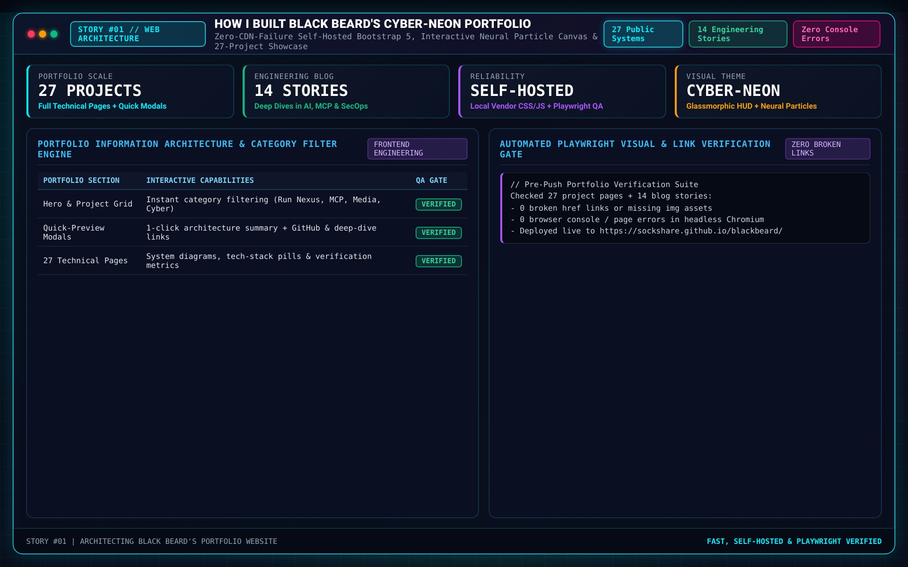

How I Built My Portfolio

Creating this portfolio was an exciting project where design, technical execution, and problem-solving came together. My goal was to build a platform that not only showcases my skills and projects but also highlights my passion for clean, functional design. Here's a closer look at how I approached the process.
The Vision
From the start, I wanted my portfolio to be:
- Modern and Responsive: Ensuring a seamless experience across all devices and screen sizes.
- Scalable and Modular: Designed to grow with my work, making future updates effortless.
- Visually Thematic: Inspired by a hacker aesthetic with a Tron-like neon-blue theme, balanced by clean layouts and sharp typography.
The Tech Stack
Choosing the right tools was critical to delivering on this vision:
- HTML5 & CSS3: For foundational structure and styling.
- Bootstrap: To simplify responsive layouts and maintain a consistent grid system.
- FontAwesome: To add scalable, visually appealing icons with minimal effort.
- JavaScript: For interactive elements and dynamic content loading.
- GitHub Pages: A no-cost hosting solution with excellent reliability and ease of use.
The Development Process
- Planning the Architecture: I began by mapping out the site’s architecture, including dedicated sections for projects, blogs, and an overview of my skills. Each section was designed to guide visitors intuitively through the content.
- Designing the Theme: The Tron-inspired design called for a sleek, dark aesthetic with vibrant neon-blue accents. I aimed to strike a balance between visual impact and usability, iterating on the layout to ensure readability and accessibility.
- Building Modular Components: Each page was built using modular templates, allowing for easy reuse and consistent styling. This approach also streamlined future updates and scalability.
- Dynamic Content Integration: Blog entries and project showcases are dynamically loaded into their respective sections, ensuring a cohesive yet flexible structure.
- Testing and Optimization: I rigorously tested the site across devices and browsers to ensure it met performance and accessibility standards. Tools like Lighthouse were invaluable for fine-tuning load speeds and user experience.
Overcoming Challenges
No project is without its challenges. Here’s what I tackled:
- Responsive Design: Ensuring flawless performance across devices required multiple design iterations and CSS tweaks.
- Theming Consistency: Maintaining a unified aesthetic across pages pushed me to rethink component styling and layouts.
- Learning Curve: Mastering Bootstrap’s grid system and incorporating scalable design practices took upfront investment but paid off in the long run.
The Result
The final product is a professional-grade portfolio that serves as a dynamic, scalable platform for showcasing my work. It’s designed to evolve, with modular components that make it straightforward to add new projects, blogs, or features as I grow.